Introduction
Just a few years ago, most companies were generating internal or external reports using text processors and spreadsheets. This was extremely inefficient and expensive: Excel and Word files were flowing from mailbox to mailbox, information was rekeyed on the fly, copied over, reorganized manually. In addition to the amount of time spent on these processes, this was very error-prone. For a few years now, the XBRL standard has been gaining importance, allowing reports to be made in a unified format. Some regulating authorities such as the SEC even made it mandatory.
In business life, standardization matters more than perfection. While XBRL is not perfect, it is now a standard, and it does a fine job doing what it was designed for.
While this is a cost-sinking revolution, it is also a revolution about access to information: using latest database technologies, XBRL reports can be made queryable . In particular, it is possible to validate that the reports do not contain a certain number of errors, to impute non-submitted information, but also to derive new information using data at an unprecedented scale (across potentially all XBRL reports in the world, and much beyond).
NoSQL technologies
Many XBRL services providers store XBRL data in a relational database. However, very soon, the limits of homogeneous, flat tables are reached and slow down requests. Other services leverage the fact that the XBRL syntax is based on XML and store it, as is, in an XML database. Yet the raw XBRL format is not suitable for querying, or at least, for querying with reasonable performance: while XBRL uses the XML syntax, its data model is significantly different from that of XML, in at least the two following ways. If you leave tuples aside, there is nothing flatter than a physical fact. Networks that have no directed cycles (i.e., directed acyclic graphs, often even trees) can be stored in more optimal ways than raw XLink.
With NoSQL technologies, XBRL can be stored in an way that is optimized for hypercube querying. This is called NoLAP (NoSQL Online Analytical Processing). NoLAP extends the OLAP paradigm by removing hypercube rigidity and letting users generate their own hypercubes on the fly on the same pool of (fact) values. Very much like NoSQL technologies extend the SQL paradigm by replacing flat, homogeneous tables with heterogeneous, arborescent data.
The JSONiq language
JSONiq is the language used by 28msec's flagship platform, 28.io. It is a NoSQL query language that deals with heterogeneous, arborescent data. It extends JSONiq with a number of modules that make it convenient to access, simultaneously, many data sources (MongoDB databases, traditional relational databases, S3 storage on Amazon, Graph Databases, Cloudant and many more) and combine them seamlessly to extract information. This tutorial assumes that the user is, or will make himself, familiar with JSONiq. A JSONiq tutorial as well as a complete reference can be found on http://www.jsoniq.org/. JSONiq queries can be executed for free on the 28.io platform.
The XBRL data sources
We provide various data sources (SEC for various subsets of companies, FINREP, etc) available on the 28.io platform. These data sources expose to you the XBRL data stored in a NoSQL database (currently MongoDB), leveraging the NoLAP paradigm. Access to the data is done through the XBRL connector, which consists of JSONiq modules.
Documentation about these modules can be found at http://www.28.io/documentation/latest/modules/bizql.
How to run the queries
All queries shown in this tutorial can be run on our platform. You can register and use our platform for free, for a basic usage and limited to DOW30. Access to all 10-Q and 10-K filings (several thousands of companies over the last 3-4 years) is possible for a fee.
The following instructions should help you get started.
- Go to the 28.io Platform Web site, http://28.io/ 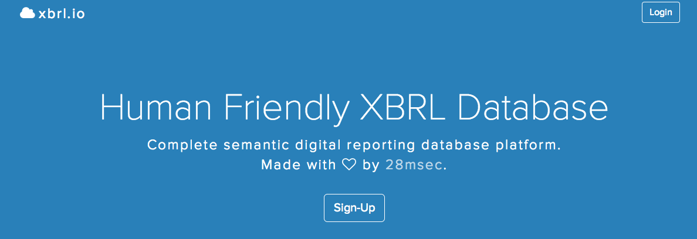
- Click on Signup. 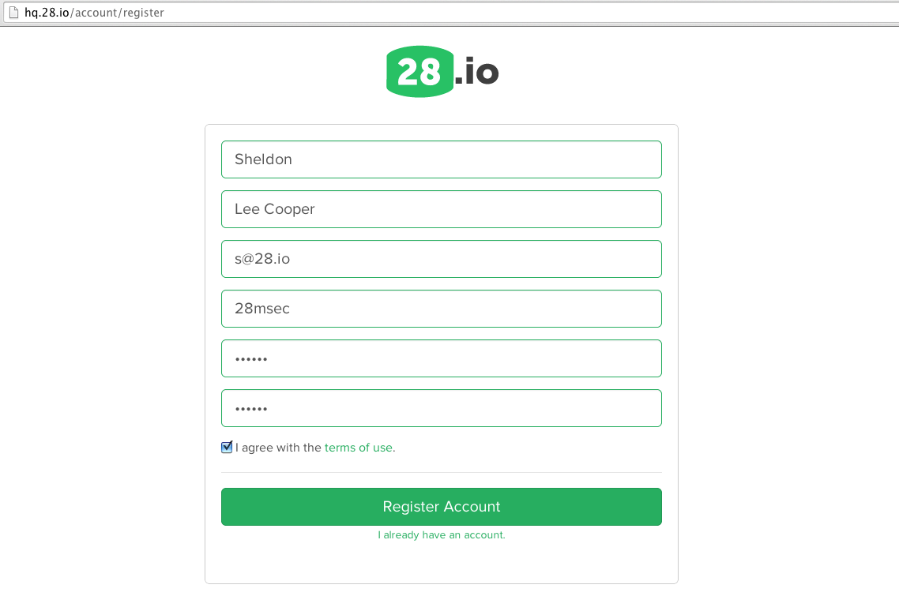
- Enter your information as well as desired credentials, and confirm. 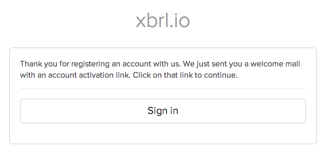
- Check your e-mail (including spam folder) and validate your e-mail address. 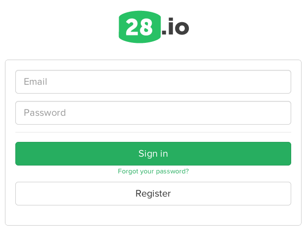
- Login using your chosen credentials. 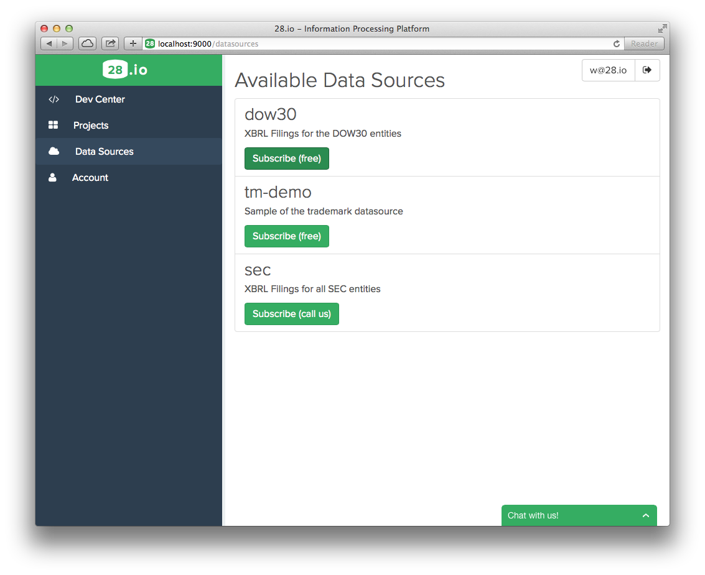
- Click onData Sourcesto view the list of data sources to which you can subscribe.

- Confirm your billing information (DOW30 is for free). Then go to the projects page.

- Create a new project by picking a name. 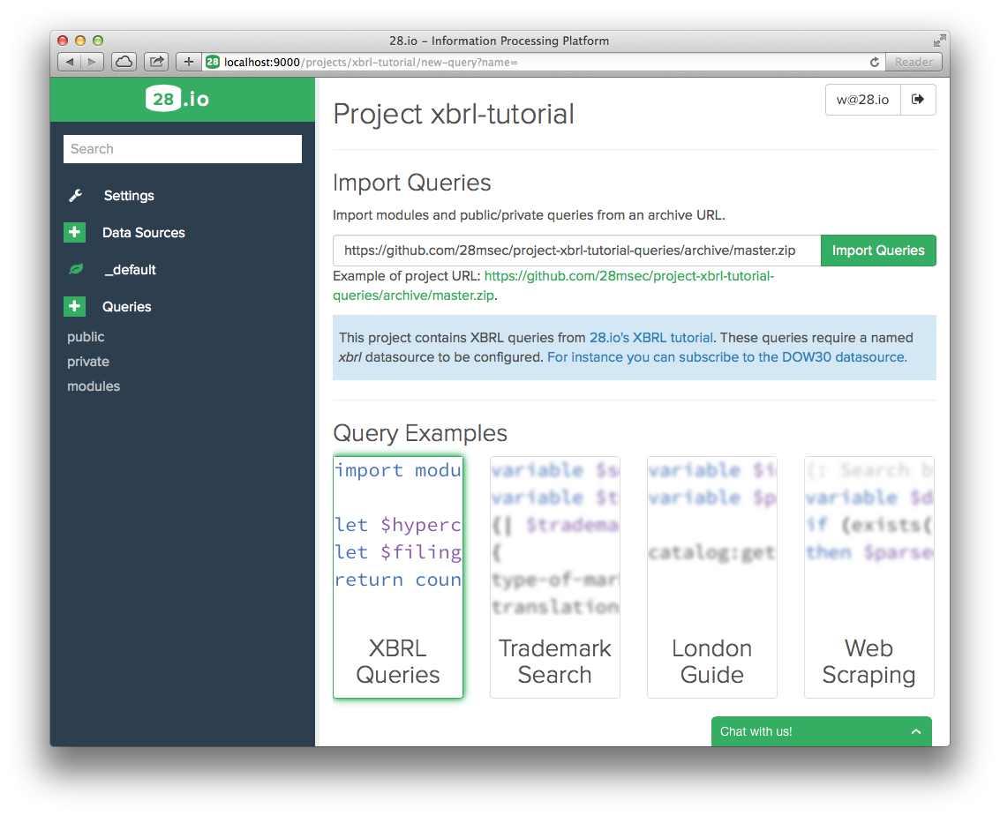
- Pick a query name, ending with .jq (for JSONiq). 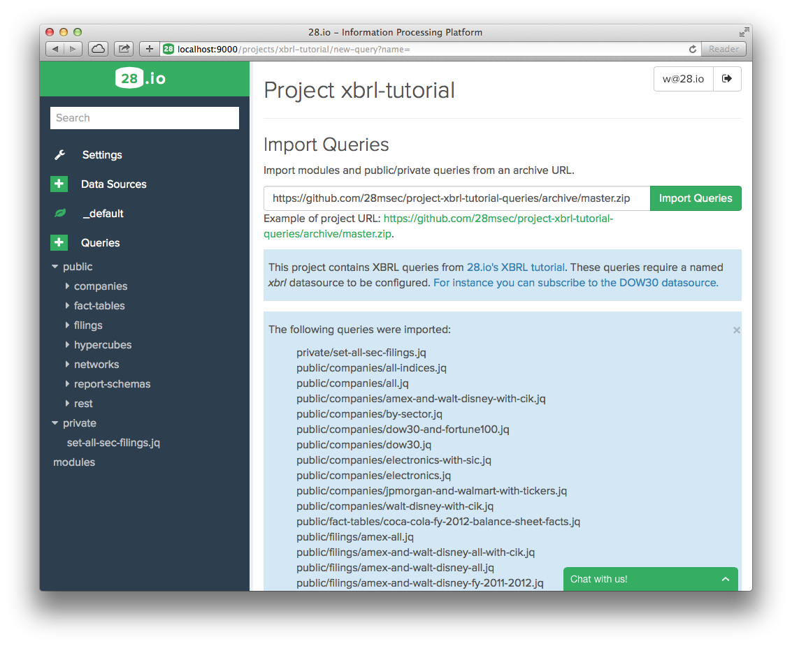
- Enter the URL of a github repository from which to import queries. The URL of this tutorial's repository can be entered by simply clicking the example link. Then click "Import Queries."
- Click on "+" next to Data Sources to add a data source to this project. 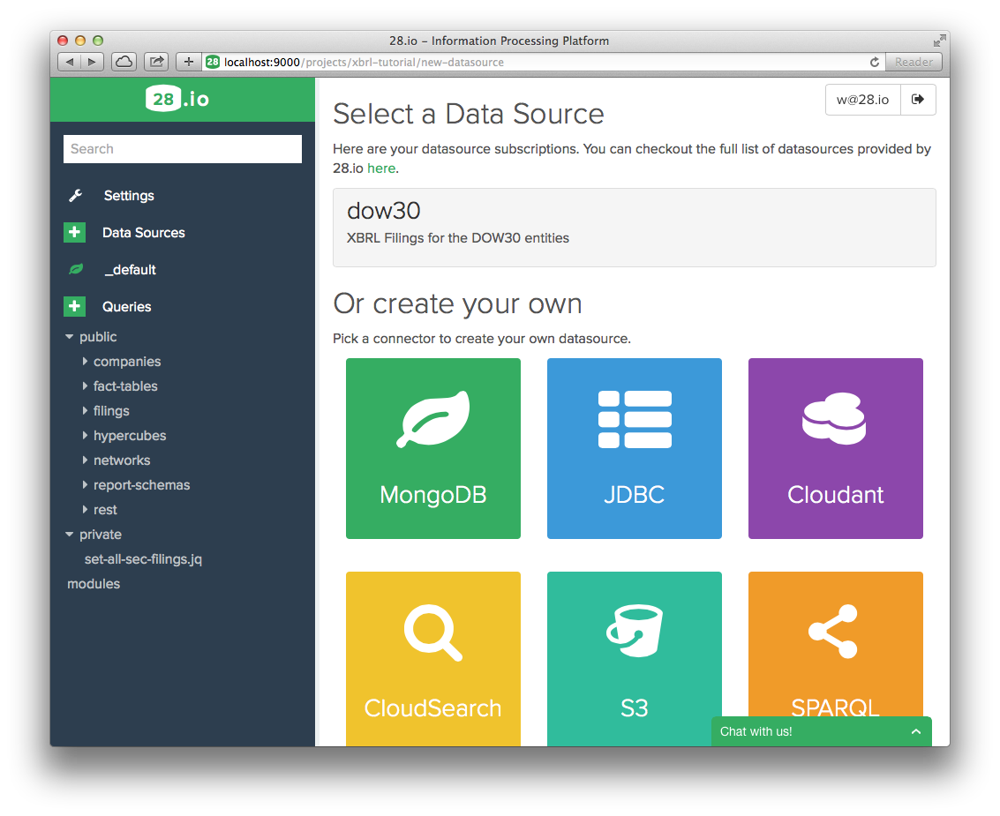
- Click on DOW30 (This is the data source that you have subscribed to earlier). 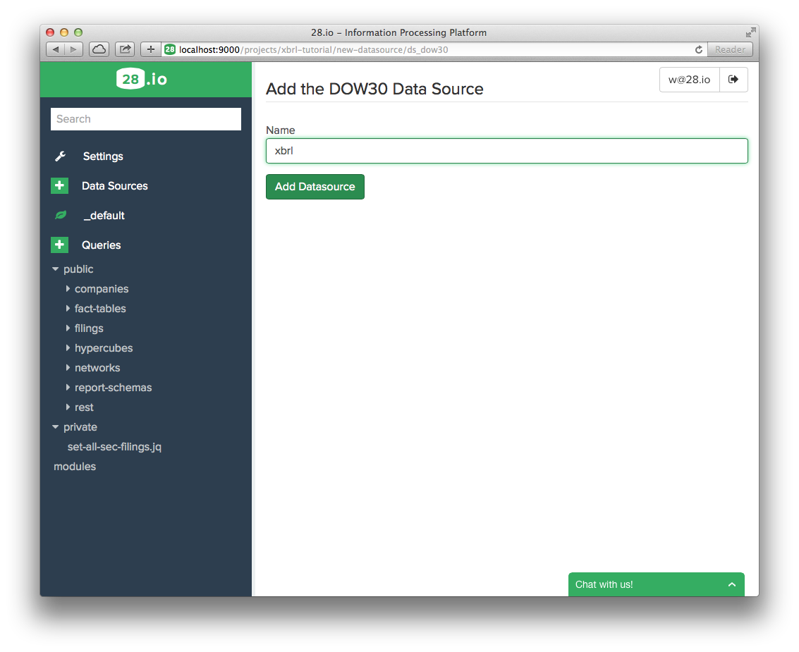
- Type "xbrl" in the text box (this is very important, as the XBRL connector specifically connects to the data source identified by this name in your project) and click "Add Data Source". 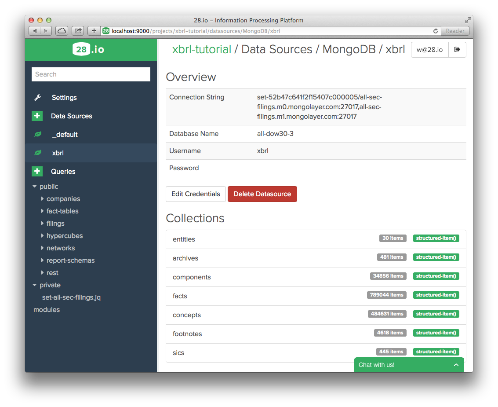
- Select a query. The code appears on the right. Click on the white arrow on a green background to execute it. The results appear below the source code. 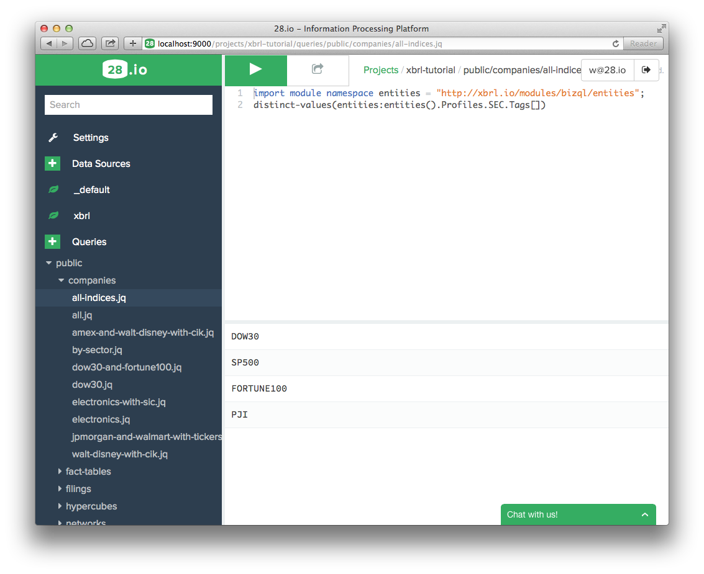
- Type your query, and click on the white triangle on a green background to execute it.##The queries in this tutorial All queries shown in this tutorial are available as an xbrl.io project on https://github.com/28msec/project-xbrl-tutorial-queries. If you make changes to the project and would like to save them in your own github repository, or if you would like to import another repository, you can use the 28 command line tool (available at https://github.com/28msec/28).
Organization of the tutorial
XBRL is about submitting facts . Facts are reported by companies, which are introduced in.
In real life though, facts are not reported one by one, but are submitted to an authority like the SEC in archives . A bit like you don't buy pop corn one chunk at a time, but in a pop corn package.
A filing is made of facts, but also contains metainformation on these facts. This metainformation is called taxonomy in the XBRL world, while the factual part is called an XBRL instance. It contains, from an abstract perspective (we don't go into the low-level details of networks, etc):
- Concept declarations: this is a description of the terminology used by the facts.
- User-friendly labels for the concepts, which can be used for fancy front-ends and editors, as well as human-readable documentation on the concepts.
- Hypercube declarations, and their dimensions (dimensions also have fancy labels, etc).
- Structures, like hierarchies of concepts that can be used on a fancy front-end as well to nicely display the facts.
- Formulas, that can be used to either validate the reported facts (example: the assets match the equities and liabilities) or to compute new, non reported facts.
Filings are explained in.
Typically, a filing is reported by a single company, called the reporting entity, and all facts are attached to it.
A filing is typically subdivided in networks. A network is just a subset of an archive that "makes sense", like a balanced sheet, or metadata on the report, or an income statement. Networks are explained in.
Just like elephants live in herds, whey they are wild, facts usually live in tables. For each network, a fact table can be obtained as shown in.
A hypercube provides a very convenient way to query for facts: give me a hypercube, and I can give you the facts that belong to it.
The hypercube can be directly taken from an archive (like a balanced sheet statement table). But it can also be generated ad hoc, which covers even more ground: ad hoc hypercubes allow the organization of facts across multiple entities, and across multiple archives, that is, across multiple reporting periods. This is shown in.
Ad hoc hypercubes are typically integrated in report schemas. A report schema can provide, in addition to a hypercube, concept maps and business rules. We will come back on this later.